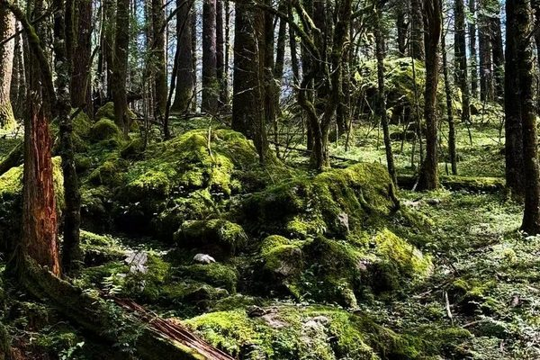

About
I am a senior undergraduate at Tsinghua University, jointly enrolled in the Department of Computer Science and Technology and Xinya College — Tsinghua's liberal arts college. I am currently a visiting research intern at Stanford University, where I am fortunate to work with Dr. Yining Hong in Prof. Yejin Choi's group. I am also grateful to Prof. Leonidas Guibas for his guidance. Previously, I was lucky to have the opportunity to work with Prof. Yiming Li at Tsinghua's College of AI.
I am applying to PhD programs for Fall 2027 entry. I am always happy to chat — please feel free to reach out.
Research Interests
My research interests lie in world models, spatial intelligence, and embodied agents. I am also interested in bringing insights from cognitive science into the study of intelligence. Broadly, I aim to build agents that understand and interact with the physical world and the people in it.
News
- Presented MindBlock at ECCV 2026 in Malmö, Sweden.
- Arrived at Stanford University for an on-site research internship.
- MindBlock was accepted to ECCV 2026.
- Released ESI-Bench on arXiv.
- Started working with Prof. Yiming Li (College of AI, Tsinghua) on spatial intelligence.
Publications & Manuscripts
* denotes equal contribution. Select a figure to enlarge it.
-
SpatialToM: Modeling Multi-Agent Theory of Mind for Embodied Spatial Intelligence
In submission
Understanding what others see, know, and believe can reveal parts of the world we cannot directly observe. SpatialToM studies this intersubjective dimension of spatial intelligence, evaluating how models infer others' spatial knowledge, integrate it with their own experience, and use it to reason about guidance and coordination.
-
MindBlock: Probing Spatial Assembly and Structure in Unified Multimodal Models
European Conference on Computer Vision (ECCV), 2026
Evaluates spatial assembly and structural consistency through active generation, with 3DGS-Eval using 3D Gaussian Splatting to assess the consistency of model-generated views.
@inproceedings{yin2026mindblock, title = {MindBlock: Probing Spatial Assembly and Structure in Unified Multimodal Models}, author = {Yin, Baiqiao and Liu, Junhao and Yin, Han and Yu, Heyang and Zhang, Tingxuan and Li, Zhiheng and Li, Chengzu and Yang, Jihan and Li, Manling and Feng, Chen and Li, Yiming}, booktitle = {Computer Vision -- ECCV 2026}, series = {Lecture Notes in Computer Science}, volume = {17032}, pages = {128--146}, publisher = {Springer}, year = {2026}, doi = {10.1007/978-3-032-37432-5_8}, url = {https://doi.org/10.1007/978-3-032-37432-5_8} } -
ESI-Bench: Towards Embodied Spatial Intelligence that Closes the Perception–Action Loop
arXiv preprint, 2026 · arXiv:2605.18746
Evaluates embodied spatial reasoning through active exploration. Experiments compare active and passive observation and analyze how action choices affect the evidence available for reasoning.
@article{hong2026esibench, title = {ESI-Bench: Towards Embodied Spatial Intelligence that Closes the Perception-Action Loop}, author = {Hong, Yining and Liu, Jiageng and Yin, Han and Li, Manling and Guibas, Leonidas and Li, Fei-Fei and Wu, Jiajun and Choi, Yejin}, journal = {arXiv preprint arXiv:2605.18746}, year = {2026} }
More publications
-
Towards Generalist Game Agents: A Survey of Foundation Models in Virtual Worlds
Transactions on Machine Learning Research (TMLR), 2026
@article{zhang2026towards, title = {Towards Generalist Game Agents: A Survey of Foundation Models in Virtual Worlds}, author = {Zhang, Kuan and Liu, Dongchen and Zhao, Qiyue and Xin, Tianyu and Su, Yue and Wang, Haisheng and Yin, Han and Ma, Hongbo and Li, Peize and Gu, Tianjun and Wu, Xiangnan and Zhang, Xinran and Li, Yongxuan and Chen, Zirong and Li, Yiming}, journal = {Transactions on Machine Learning Research}, year = {2026}, issn = {2835-8856}, url = {https://openreview.net/forum?id=SDkEq8Fzvl} }
Education & Experience
-
2026.04 – Present
Visiting Research Intern · Stanford University
Working with Dr. Yining Hong in Prof. Yejin Choi's group, with guidance from Prof. Leonidas Guibas.
As a co-first author of SpatialToM, I led task design, core implementation, experimental analysis, and paper writing. I built a scene- and trajectory-based data-generation pipeline with visibility histories, programmatic reference answers, and checks that each inference is supported by the observer's evidence. I evaluated four vision-language models and analyzed their errors in belief uncertainty and spatiotemporal reasoning.
For ESI-Bench, I contributed to paper writing and visualizations.
-
2025.08 – 2026
Undergraduate Researcher · New York University & Tsinghua University
Advised by Prof. Yiming Li (College of AI, Tsinghua), in collaboration with the AI4CE Lab at NYU. As a co-first author of MindBlock (ECCV 2026), I co-developed its data-generation pipeline, task design, and evaluation protocol, including LLM-based judges and 3DGS-Eval. I also built an RL training framework for pose self-correction, efficient spatial exploration, and interruptible planning through environment interaction.
-
2024.09 – 2025.05
Academic Rising Star Program · Tsinghua University
Advised by Prof. Juanzi Li. Surveyed multimodal large-model research for long-video understanding, helped select the model architecture, and explored audio processing.
-
2023 – 2027
B.Eng. in Computer Science and Technology · Tsinghua University
Jointly enrolled in Xinya College, Tsinghua's interdisciplinary liberal arts college. Expected graduation July 2027.
Awards & Honors
- Tsinghua University Comprehensive Excellence Scholarship Awarded in Academic Excellence, Science and Technology Innovation, and Arts Excellence.
- Tsinghua University Sky Program — International Conference Travel Grant Selected for competitive university funding to present MindBlock at ECCV 2026.
Beyond Research
Things I spend my other hours on.
Outside research, I enjoy exploring new places and spending time in nature. (Here are a few photos I've taken in places I've visited .) I also enjoy reading , particularly literature and history, as well as drawing and painting . I'm also a very casual stargazer .

Music
I played the konghou (箜篌), an ancient Chinese harp, and the Western concert harp in the Tsinghua University Chinese Orchestra. Off stage, I mostly listen to classical and pop music , and I also enjoy musicals .
Contact
I check my Tsinghua email regularly: